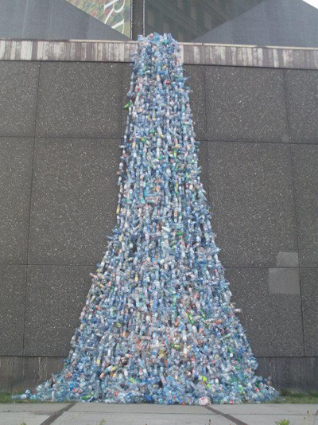
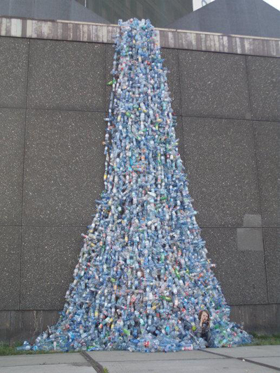
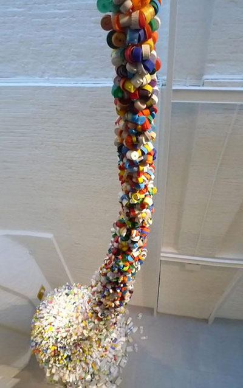
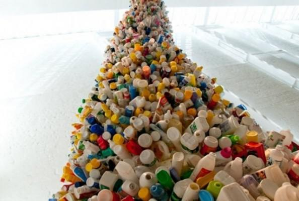
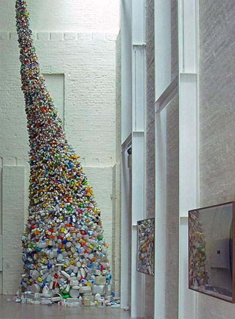
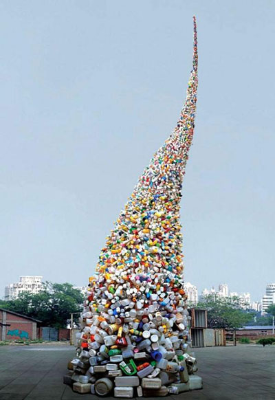

Since Marcel Duchamp exhibited his pissoir (urinal, also called "Fountain") in New York, a real landmark in art's history, art has never been the same. Oscar Wilde's Art of Art's sake has yielded to the Avantgarde's gesture, which took precedence over the object. Now we might consider Wang Zhiyuan as one of the contemporary artists who descends from the Avantgarde. Here are some photos of his Amsterdam exhibition:


And you might think that, since Duchamp one can make art out of virtually anything. Which is true. Artists have gathered courage. They don't need to make sculptures out of bronze, stone (materials which resist the passing of time), they can do it using wax, or even toilet paper, whatever comes to mind.
For instance look at the next photos, from his installation Thrown to the Wind:


You have to acknowledge the fact that he's a real craftsman. You can't take that away from him. But that is not the actual issue. Even though the Avantgarde made it much easier for artists to experiment with whatever they could think of (things which were almost inconceivable even at the beginning of the 20th century) much of today's art seems to be limiting itself, by reaching for a goal which is beyond art itself.

Wang Zhiyuan feels that he would betray himself, if his creations weren't rooted into the society, that is, into the social message. Duchamp's pissoir, as the Avantgarde in general, was a statement against academism, against any conventional values that were upheld, even more, it was a bearer of utter destruction. So two sides represent opposite poles.
Wang Zhiyuan's art loses its autonomy as art, because it becomes dependent on a social message that it tries to deliver. It doesn't deconstruct anything. Art becomes useful, by creating a goal which points to something outside art. There's no question about its being spectacular, it will always draw your attention to it. It's just that, in a way, it makes use of the same means used by propagandistic art.

Obviously, the message is quite different from what we'd call "traditional" propaganda and, first of all, as I said, it bears a social meaning, and only secondly a political one. But that doesn't exempt it from the fact that it uses the exact same mechanisms as the (solely) politically engaged art. This is why, I believe, not only is the esthetic criterion starting to lose ground, but it's becoming an ex-centric part of the work of art altogether.
Photos from Wang Zhiyuan's blog and from alecshao on tumblr
About Vinci: I am an overly passionate, lethargic misanthrope, who very easily finds fault with others. Being very uninterested in people's opinion of me, I relish my egocentricity. I don't hate human beings, I just loathe them from time to time. So I'd call myself quite moderate, even well-behaved, up to the point I go ballistic.
The article from Mole Empire website :
http://molempire.com/2012/07/03/losing-art-for-arts-sake-in-wang-zhiyuans-work/